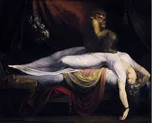
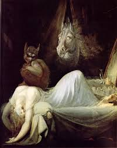

The Mare
A Mare is a malicious entity in Germanic and Slavic folklore that rides on people's chests while they sleep, bringing on bad dreams. Believe it or not, the word "nightmare" derives from this legend.
The mare was also believed to "ride" horses, which left them exhausted and covered in sweat by the morning. She could also entangle the hair of the sleeping man or beast, resulting in "marelocks", Swedish or marefletter and marefloker in Norwegian. The belief probably originated as an explanation to the Polish plait phenomenon, a hair disease. It was even believed that trees were ridden by the legend, in order to explain oddly tangled branches.
According to the Vatnsdæ saga, Thorkel Silver has a dream about riding a red horse that barely touched ground, which he interpreted as a positive omen, but his wife disagreed, explaining that a mare signified a man's fetch, and that the red color boded bloodiness. This association of the nightmare with fetch is thought to be of late origin.
Folklore claims that mares can slip through the slightest cracks in walls or floors like sand or smoke and re-emerge to terrorize their sleeping victim by .riding. on their chest. By sitting on their chests the mare cause their victim to have nightmares (and sleep paralysis if they awaken) as they are slowly being smothered to death.
